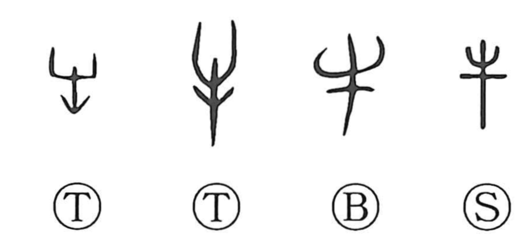

Explanation
This character is a front-view pictograph of an ox. The tall vertical stroke between the horns marks the head and body; a V-shaped line beneath the horns together with a horizontal stroke suggests the characteristic raised backbone of cattle. It is drawn in much the same way as the front-facing sheep graph, but with larger, heavier horns to signal the bovine. In ancient ritual life cattle, alongside sheep and pigs, were among the foremost sacrificial animals. Bronze tripods (ding) even bear inscriptions such as “...牛鼎,” indicating a vessel made for cooking oxen. Because an ox’s large body was sometimes split in two, 半 (“half”) was understood as the act of halving an ox. At oath-taking assemblies, nobles cut the ox’s left ear and drank its blood; from this practice comes the idiom 執牛耳, “to hold the ox’s ear,” meaning to preside over an alliance.